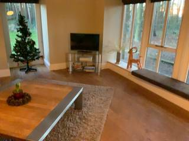
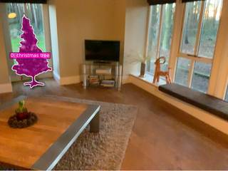
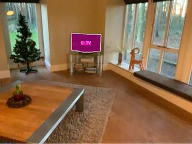

To determine the direction of the TV relative to the observer, let's map out the scene:
- Observer's Position and Orientation: The observer is standing at the Christmas tree and facing the camera. This direction is defined as North (N).
- Spatial Layout:
- The camera is facing the wall where the Christmas tree and TV are located.
- From the camera's perspective, the Christmas tree is on the left and the TV is to the right of the tree.
- Mapping Directions:
- Since the observer is facing the camera, North is toward the camera.
- Consequently, South is the direction behind the observer (toward the wall).
- To the observer's left is West (W).
- To the observer's right is East (E).
- Locating the TV: From the position of the Christmas tree, facing the camera, the TV is located to the observer's right.
Therefore, the direction of the TV is East.
E
ReturnAnswer("SE")
[ReturnAnswer] Answer submitted: SE
Task Analysis The goal is to determine the cardinal direction of a TV relative to a person standing at a Christmas tree. The person is facing the camera, and this direction is defined as North (N). This is a 3D spatial reasoning problem requiring the determination of a custom coordinate system based on the relative positions of the Christmas tree and the camera.
The implicit coordinate system is a horizontal plane (ground plane) where:
- North (N): The vector from the Christmas tree to the camera.
- East (E): The vector 90° clockwise from North around the world-up axis.
- South (S): Opposite of North.
- West (W): Opposite of East.
The target variable is the direction of the TV relative to the Christmas tree, mapped to one of the 8 cardinal/intercardinal directions (N, NE, E, SE, S, SW, W, NW).
Information Needs
- 3D Positions: The world-space 3D coordinates of the Christmas tree, the TV, and the camera.
- Scene Geometry: A 3D reconstruction to provide depth and camera extrinsics.
- Object Segmentation: Precise masks for the Christmas tree and the TV to calculate their centroids.
Computation Plan
- Reconstruction: Perform a 3D reconstruction of the single frame to obtain camera pose and depth maps.
recon = tools.Reconstruct.Reconstruct(InputImages)
- Object Segmentation:
- Use
tools.SAM3.segment_image_by_text(InputImages[0], "christmas tree")to find the tree. - Use
tools.SAM3.segment_image_by_text(InputImages[0], "TV")to find the TV. - Verification: Use
show()to visualize the masks on the original image to ensure they are correct. If text segmentation fails or is ambiguous, usevlm.locateto get bounding boxes andtools.SAM3.segment_image_by_box.
- Use
- Coordinate Extraction:
- Extract the 3D centroid of the Christmas tree:
tree_3d = seg_tree.get_centroid_3d(recon, frame=0, object=0). - Extract the 3D centroid of the TV:
tv_3d = seg_tv.get_centroid_3d(recon, frame=0, object=0). - Extract the camera position:
cam_pos = recon.extrinsics[0][:3, 3].
- Extract the 3D centroid of the Christmas tree:
- Direction Vector Calculation:
- Define the North vector:
vec_north = cam_pos - tree_3d. Normalize this vector. - Define the World Up vector:
vec_up = [0, 1, 0](as per reconstruction convention). - Define the East vector:
vec_east = np.cross(vec_up, vec_north). Normalize this vector. - Define the Target vector (Tree to TV):
vec_to_tv = tv_3d - tree_3d. Normalize this vector.
- Define the North vector:
- Direction Mapping:
- Project
vec_to_tvonto the North-East plane:proj_n = np.dot(vec_to_tv, vec_north)proj_e = np.dot(vec_to_tv, vec_east)
- Calculate the angle:
angle_rad = np.arctan2(proj_e, proj_n). - Convert the angle to degrees (0° = N, 90° = E, 180° = S, 270° = W).
- Map the angle to the nearest 45° sector to choose from {N, NE, E, SE, S, SW, W, NW}.
- Project
- Visual Cross-Check:
- Render a BEV map using
recon.render_bev(masks=combined_seg)to visually confirm the relative positions of the tree, TV, and camera.
- Render a BEV map using
Verification Checklist
[
{"priority": "HIGH", "description": "Verify that the masks for both the Christmas tree and the TV are accurate and non-empty."},
{"priority": "HIGH", "description": "Confirm that the 3D centroids are not NaN and are physically plausible within the scene."},
{"priority": "MEDIUM", "description": "Cross-verify the calculated direction with the BEV rendering to ensure the North/East vectors are correctly oriented."},
{"priority": "LOW", "description": "Sanity-check the angle calculation to ensure the mapping to cardinal directions is correct."}
]
Fallbacks
- Segmentation Failure: If
segment_image_by_textfails, I will usevlm.locateto find the objects and then usesegment_image_by_box. - Reconstruction Noise: If the 3D centroids seem erratic, I will use
vlm.ask_with_thinkingto get a qualitative description of the layout (e.g., "Is the TV to the left or right of the tree from the camera's perspective?") to sanity-check the geometric result. - Ambiguous North: If the tree is directly under the camera, the North vector is ill-defined. I will check for this case and report it if it occurs.
{ "tool": "tools.Reconstruct.Reconstruct", "args": { "frames": "InputImages" } }
=== Step 0 Execution Feedback === [SUCCESS] Code executed in 1.27s. [Variables] New/changed: result_0: Reconstruction, frames=[0] [Tool Calls] 1 tool/VLM call(s) this step.
{ "tool": "tools.SAM3.segment_image_by_text", "args": { "image": "InputImages[0]", "prompt": "christmas tree", "label": "christmas tree" } }
=== Step 1 Execution Feedback === [SUCCESS] Code executed in 1.37s. [Variables] New/changed: result_1: PerFrameMask, frames=[0] [Tool Calls] 1 tool/VLM call(s) this step.
{ "tool": "tools.SAM3.segment_image_by_text", "args": { "image": "InputImages[0]", "prompt": "TV", "label": "TV" } }
=== Step 2 Execution Feedback === [SUCCESS] Code executed in 1.97s. [Variables] New/changed: result_2: PerFrameMask, frames=[0] [Tool Calls] 1 tool/VLM call(s) this step.
{ "tool": "show", "args": { "image": [ "InputImages[0]", "result_1.visualize(0)", "result_2.visualize(0)" ] } }
[image: show_0001]



=== Step 3 Execution Feedback === [SUCCESS] Code executed in 0.97s. [Variables] New/changed: result_3: NoneType [Inline Images] 3 image(s) attached below. Labels: [InputImages[0], result_1.visualize(0), result_2.visualize(0)] [show() budget] 247/250 images remaining.
=== Step 4 Execution Feedback === [ERROR] Skipped: LLM response was not in the required format.
{ "tool": "result_1.get_centroid_3d", "args": { "recon": "result_0", "frame": 0, "object": 0 } }
=== Step 5 Execution Feedback === [ERROR] Skipped: LLM response was not in the required format.
{ "tool": "tools.SAM3.segment_image_by_text", "args": { "image": "InputImages[0]", "prompt": "christmas tree, TV", "label": "objects" } }
=== Step 6 Execution Feedback === [SUCCESS] Code executed in 0.31s. [Variables] New/changed: result_6: PerFrameMask, frames=[0] [Tool Calls] 1 tool/VLM call(s) this step.
=== Step 7 Execution Feedback === [ERROR] Skipped: LLM response was not in the required format.
{ "tool": "show", "args": { "image": "result_0.render_bev(masks=result_6)" } }
[image: show_0002]
=== Step 8 Execution Feedback === [SUCCESS] Code executed in 0.13s. [Variables] New/changed: result_8: NoneType [Inline Images] 1 image(s) attached below. Labels: result_0.render_bev(masks=result_6) [show() budget] 246/250 images remaining.
{ "tool": "ReturnAnswer", "args": { "answer": "E" } }
[ReturnAnswer] Answer submitted: E
🛠️ Decided to use 2 tool(s)
[ { "name": "vlm__detect_one", "arguments": { "image_index": 0, "obj_name": "christmas tree" } }, { "name": "vlm__detect_one", "arguments": { "image_index": 0, "obj_name": "TV" } } ]
⚡ Executing vlm__detect_one...
{ "image_index": 0, "obj_name": "christmas tree" }
✅ vlm__detect_one completed (with generated image)
⚡ Executing vlm__detect_one...
{ "image_index": 0, "obj_name": "TV" }
✅ vlm__detect_one completed (with generated image)
🧠 Synthesizing results from 2 tool(s)...
E
E
E
Task Analysis
The objective is to determine the direction of the TV relative to a person standing at a Christmas tree and facing the camera.
- Reference Point: The Christmas tree.
- Reference Orientation (North): The vector from the Christmas tree to the camera.
- Target Object: The TV.
- Coordinate System: Object-relative 3D space. North (N) is defined as the direction the person is facing (towards the camera). East (E) is the direction to the person's right while facing North.
- Answer Format: One of the cardinal or intercardinal directions: {N, NE, E, SE, S, SW, W, NW}.
Information Needs
To compute the direction quantitatively, I need:
- The 3D world position of the camera.
- The 3D world position of the Christmas tree.
- The 3D world position of the TV.
- A way to define the "Right" (East) vector relative to the person's orientation.
Computation Plan
- Scene Reconstruction: Perform a 3D reconstruction of the single provided image to obtain depth maps and camera pose.
recon = tools.Reconstruct.Reconstruct(InputImages)
- Object Segmentation:
- Use
tools.SAM3.segment_image_by_textto find masks for the "christmas tree" and "TV". - If text prompts fail or return multiple ambiguous objects, use
vlm.locateto get bounding boxes for the specific Christmas tree and TV, then usetools.SAM3.segment_image_by_box.
- Use
- Visual Verification:
- Use
show()to display the original image alongside the segmentation masks for the Christmas tree and TV to ensure they are correctly identified.
- Use
- 3D Coordinate Extraction:
- Extract the camera position:
cam_pos = recon.extrinsics[0][:3, 3]. - Extract the 3D centroid of the Christmas tree:
tree_pos = seg_tree.get_centroid_3d(recon, frame=0, object=0). - Extract the 3D centroid of the TV:
tv_pos = seg_tv.get_centroid_3d(recon, frame=0, object=0).
- Extract the camera position:
- Direction Vector Calculation:
- Define the North vector: $\vec{N} = \text{normalize}(\text{cam_pos} - \text{tree_pos})$.
- Define the World Up vector: $\vec{Up} = [0, 1, 0]$.
- Define the East vector (to the person's right): $\vec{E} = \text{normalize}(\vec{N} \times \vec{Up})$.
- Define the vector to the TV: $\vec{V}_{tv} = \text{normalize}(\text{tv_pos} - \text{tree_pos})$.
- Angular Projection:
- Calculate the projection of $\vec{V}_{tv}$ onto the North and East axes:
- $dot_N = \vec{V}_{tv} \cdot \vec{N}$
- $dot_E = \vec{V}_{tv} \cdot \vec{E}$
- Calculate the angle $\theta = \text{atan2}(dot_E, dot_N)$ in degrees.
- Calculate the projection of $\vec{V}_{tv}$ onto the North and East axes:
- Direction Mapping:
- Map $\theta$ to the 8-point compass:
- $-22.5^\circ$ to $22.5^\circ \rightarrow \text{N}$
- $22.5^\circ$ to $67.5^\circ \rightarrow \text{NE}$
- $67.5^\circ$ to $112.5^\circ \rightarrow \text{E}$
- $112.5^\circ$ to $157.5^\circ \rightarrow \text{SE}$
- $157.5^\circ$ to $202.5^\circ \rightarrow \text{S}$
- $202.5^\circ$ to $247.5^\circ \rightarrow \text{SW}$
- $247.5^\circ$ to $292.5^\circ \rightarrow \text{W}$
- $292.5^\circ$ to $337.5^\circ \rightarrow \text{NW}$
- Map $\theta$ to the 8-point compass:
Verification
- Mask Integrity: Visually confirm that the masks for the TV and Christmas tree are accurate and not empty.
- 3D Sanity Check: Print the 3D coordinates and ensure they are not NaN and are physically plausible (e.g., objects are on the floor).
- Cross-Validation: Use
vlm.ask_with_thinkingto ask for a qualitative description of the TV's position relative to the Christmas tree and the camera (e.g., "Is the TV to the left or right of the Christmas tree from the camera's perspective?") to verify the computed direction. - Coordinate Logic: Double-check that the East vector is correctly derived as the right-hand side of the person facing the camera.
Fallbacks
- If the 3D reconstruction is too noisy for a single frame, I will rely more heavily on
vlm.ask_with_thinkingto establish the relative 2D layout and use the camera's optical axis as a proxy for the North vector. - If the TV is not clearly visible, I will use
vlm.locateto search for it in the image.
CHECKLIST
[
{"priority": "HIGH", "description": "Verify that the masks for the Christmas tree and TV are correctly placed and non-empty"},
{"priority": "HIGH", "description": "Confirm the North vector is correctly defined as the vector from the tree to the camera"},
{"priority": "HIGH", "description": "Ensure the East vector is correctly calculated as the person's right-hand side"},
{"priority": "MEDIUM", "description": "Cross-check the computed direction with a qualitative VLM assessment of the scene layout"},
{"priority": "LOW", "description": "Check that 3D centroids are computed using median/confidence filtering to reduce noise"}
]
# 1. Scene Reconstruction recon = tools.Reconstruct.Reconstruct(InputImages) # 2. Object Segmentation # Segment the Christmas tree seg_tree = tools.SAM3.segment_image_by_text(InputImages[0], "christmas tree") # Segment the TV seg_tv = tools.SAM3.segment_image_by_text(InputImages[0], "TV") # Visual Verification # Get the frame index for visualization fi = InputImages[0].frame_index # Check if masks are empty and visualize tree_exists = False if seg_tree.num_objects > 0: for i in range(seg_tree.num_objects): if seg_tree.get_mask(frame=fi, object=i).sum() > 0: tree_exists = True break tv_exists = False if seg_tv.num_objects > 0: for i in range(seg_tv.num_objects): if seg_tv.get_mask(frame=fi, object=i).sum() > 0: tv_exists = True break print(f"Christmas tree mask exists: {tree_exists}") print(f"TV mask exists: {tv_exists}") # Show original image and masks show([ InputImages[0], seg_tree.visualize(fi) if tree_exists else InputImages[0], seg_tv.visualize(fi) if tv_exists else InputImages[0] ])
Christmas tree mask exists: True TV mask exists: True [image: show_0001]
=== Step 0 Execution Feedback ===
[SUCCESS] Code executed in 27.86s.
[Output]
Christmas tree mask exists: True
TV mask exists: True
[Variables] New/changed:
recon: Reconstruction, frames=[0]
seg_tree: PerFrameMask, frames=[0]
seg_tv: PerFrameMask, frames=[0]
fi: int
tree_exists: bool
i: int
tv_exists: bool
[Inline Images] 3 image(s) attached below.
Labels: [
InputImages[0],
seg_tree.visualize(fi) if tree_exists else InputImages[0],
seg_tv.visualize(fi) if tv_exists else InputImages[0]
]
[Tool Calls] 3 tool/VLM call(s) this step.
[show() budget] 247/250 images remaining.import numpy as np # 1. Extract 3D positions # Camera position at frame 0 cam_pos = recon.extrinsics[0][:3, 3] # Christmas tree centroid tree_pos = seg_tree.get_centroid_3d(recon, frame=fi, object=0) # TV centroid tv_pos = seg_tv.get_centroid_3d(recon, frame=fi, object=0) print(f"Camera position: {cam_pos}") print(f"Tree position: {tree_pos}") print(f"TV position: {tv_pos}") if tree_pos is None or tv_pos is None: print("Error: Could not compute 3D centroids.") else: # 2. Define Coordinate System # North (N): Vector from Christmas tree to camera vec_n = cam_pos - tree_pos north_vec = vec_n / np.linalg.norm(vec_n) # World Up vector up_vec = np.array([0, 1, 0]) # East (E): Person's right while facing North # E = N x Up east_vec = np.cross(north_vec, up_vec) east_vec = east_vec / np.linalg.norm(east_vec) # Vector from tree to TV vec_tv = tv_pos - tree_pos v_tv_norm = vec_tv / np.linalg.norm(vec_tv) # 3. Project TV vector onto N and E axes dot_n = np.dot(v_tv_norm, north_vec) dot_e = np.dot(v_tv_norm, east_vec) # Calculate angle in degrees # atan2(y, x) where x is North and y is East angle_rad = np.arctan2(dot_e, dot_n) angle_deg = np.degrees(angle_rad) print(f"Dot N: {dot_n:.4f}, Dot E: {dot_e:.4f}") print(f"Angle (degrees): {angle_deg:.2f}") # 4. Map angle to direction def map_angle_to_direction(deg): # Normalize angle to [0, 360) deg = deg % 360 if -22.5 <= deg <= 22.5 or deg > 337.5: return "N" elif 22.5 < deg <= 67.5: return "NE" elif 67.5 < deg <= 112.5: return "E" elif 112.5 < deg <= 157.5: return "SE" elif 157.5 < deg <= 202.5: return "S" elif 202.5 < deg <= 247.5: return "SW" elif 247.5 < deg <= 292.5: return "W" elif 292.5 < deg <= 337.5: return "NW" return "Unknown" direction = map_angle_to_direction(angle_deg) print(f"Calculated Direction: {direction}")
Camera position: [-1.41084913e-03 8.35301409e-01 -5.76287004e-04] Tree position: [-1.8399196 1.437925 -4.178014 ] TV position: [-0.27282745 1.6203635 -4.3451414 ] Dot N: 0.2838, Dot E: -0.9465 Angle (degrees): -73.31 Calculated Direction: W
=== Step 1 Execution Feedback === [SUCCESS] Code executed in 0.01s. [Output] Camera position: [-1.41084913e-03 8.35301409e-01 -5.76287004e-04] Tree position: [-1.8399196 1.437925 -4.178014 ] TV position: [-0.27282745 1.6203635 -4.3451414 ] Dot N: 0.2838, Dot E: -0.9465 Angle (degrees): -73.31 Calculated Direction: W [Variables] New/changed: cam_pos: ndarray, shape=(3,), dtype=float64 tree_pos: ndarray, shape=(3,), dtype=float32 tv_pos: ndarray, shape=(3,), dtype=float32 vec_n: ndarray, shape=(3,), dtype=float64 north_vec: ndarray, shape=(3,), dtype=float64 up_vec: ndarray, shape=(3,), dtype=int64 east_vec: ndarray, shape=(3,), dtype=float64 vec_tv: ndarray, shape=(3,), dtype=float32 v_tv_norm: ndarray, shape=(3,), dtype=float32 dot_n: float64, shape=(), dtype=float64 dot_e: float64, shape=(), dtype=float64 angle_rad: float64, shape=(), dtype=float64 angle_deg: float64, shape=(), dtype=float64 direction: str
ReturnAnswer("W")
[ReturnAnswer] Answer submitted: W